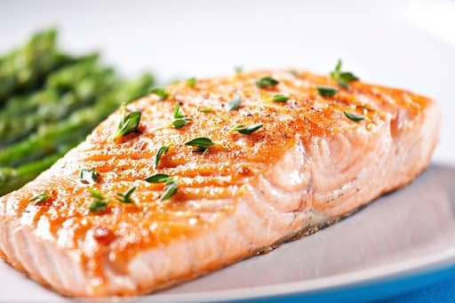

Home
Salmon Recipe

Cast iron salmon is rich, moist and delicious and so easy to make! Using just 4-ingredients you can have crispy skin salmon in just 20 minutes. A super simple weeknight meal and a great head start ingredient for a busy week.
Cast iron salmon is one of my favorite ways to make this fish. It’s super easy to do and results in a moist and flakey salmon filet with super crispy skin. Serve this up with a couple of simple sides (we love asparagus + rice pilaf) and you’ll have a delicious and nutritious dinner ready to go any night of the week.
Ingredients
- A cut of salmon
- Olive oil
- A slice of lemon or lemon juice
- Salt & Pepper
Steps
- Preheat the oven to 450 F and place the pan in the oven. Allow the pan to get nice and hot while your oven heats up. This results in a nice crispy skin.
- Pat the salmon filets dry and season the salmon skin with kosher salt.
- Place the seasoned salmon, skin side down in the hot pan (be sure to grease the pan first).
- Season the top of the salmon with a little extra salt and some black pepper.
- Pop the pan back in the oven and cook for 4-6 minutes per 1/2 inch thickness of your salmon filets.